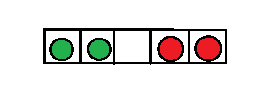
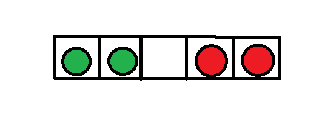

- Stream: astrazione per flussi di informazione
- Lettura o scrittura di informazioni su qualunque dispositivo I/O (file, ma non solo)
- File di testo
- Varie codifiche (UTF-8 o altro)
- Conversioni automatiche, es.
"\n"→"\r\n"
- File binari
- I/O preciso byte a byte, senza nessuna conversione
- Qualsiasi file... anche di testo!

Introduzione alla programmazione
Michele Tomaiuolo
Ingegneria dell'Informazione, UniPR
Flussi di dati
Scrittura su file
- Funzione
openper accedere ad un file (di testo)- Modalità scrittura o lettura:
"w", o"r"
- Modalità scrittura o lettura:
- Blocco
with: chiude il file al termine delle operazioni (anche in caso di errore) - Scrittura su file: funzione
print
with open("squares.txt", "w") as squares:
for x in range(10):
print(x, x ** 2, file=squares)
Ciclo di lettura da file

- File di input come sequenza di righe di testo
- Ciclo
forper scorrere le righe (str)
- Ciclo
- Le righe lette contengono
'\n'alla finestrip()toglie spaziature iniziali e finali
with open("shopping_list.txt", "r") as grocery:
for line in grocery:
# process line
print(line.strip(), ":", len(line))
Lettura di una riga
readlinelegge e “consuma” una sola riga- Letture successive saltano le righe già “consumate”
- Il “nastro” del file avanza sotto la “testina di lettura”
- Alla fine del file, viene letta una stringa vuota
with open("some_file.txt", "r") as txt_file:
first_line = txt_file.readline()
second_line = txt_file.readline()
# both strings contain '\n' at the end
ü§î Gestione errori
- Eccezioni: per gestire separatamente i casi inattesi
- Errore all'interno di
try: esecuzione interrotta subito - Possibile avere diversi blocchi
except- Eseguito il primo che gestisce il tipo di errore verificatosi
x = None
while x is None:
try:
x = int(input("Please enter a number: "))
print("That's fine")
except ValueError:
print("Oops! That was no valid number. Try again...")
print("The square is", x ** 2)
ü§î Errori da file
- Il blocco
withassicura comunque la chiusura del file readlegge tutto il file come unica stringa
try:
with open("other_file.txt", "r") as f:
whole_text = f.read()
# do stg with whole_text
except IOError as err:
print("Oh, my!")
print(err)
ü§î I/O su stringhe e console
- Stringhe come stream di I/O:
io.StringIO - Console come stream:
sys.stdin,sys.stdout,sys.stderr - Metodo
writedei file: scrive una stringa, senza\nimplicito
import io, sys
with io.StringIO() as output:
output.write("First line.\n")
print("Second line.", file=output)
contents = output.getvalue() # retrieve text, with both lines
sys.stdout.write(contents)
for line in sys.stdin: # CTRL-D (Lin) or CTRL-Z (Win) to end the input
print(len(line)) # notice '\n' at the end
Matrici
Liste multidimensionali
a = [['A', 'B', 'C', 'D'],
['E', 'F', 'G', 'H'],
['I', 'L', 'M', 'N']] # 2D
b = ['A', 'B', 'C', 'D',
'E', 'F', 'G', 'H',
'I', 'L', 'M', 'N'] # 1D
i = y * cols + x # 2D -> 1D
y = i // cols
x = i % cols # 1D -> 2D
Somma colonne: matrice
matrix = [[2, 4, 3, 8],
[9, 3, 2, 7],
[5, 6, 9, 1]]
rows = len(matrix)
cols = len(matrix[0])
for x in range(cols):
total = 0
for y in range(rows):
val = matrix[y][x]
total += val
print("Col #", x, "sums to", total)
Lista come pseudo-matrice
matrix = [2, 4, 3, 8,
9, 3, 2, 7,
5, 6, 9, 1]
cols, rows = 4, 3 # rows = len(matrix) // cols
for x in range(cols):
total = 0
for y in range(rows):
val = matrix[y * cols + x] # 2D -> 1D
total += val
print("Col #", x, "sums to", total)
- Data la sola lista, non note le dimensioni
- Bisogna conoscere
colsorows
- Bisogna conoscere
Matrici di dimensioni note
matrix = [[' ' for x in range(cols)] for y in range(rows)]
# all elements are inited as ' ' -- your need may vary
matrix = []
for y in range(rows):
new_row = []
for x in range(cols):
new_row.append(' ')
matrix.append(new_row)
Gioco astratto
def abstract():
raise NotImplementedError("Abstract method")
class BoardGame:
def play_at(self, x: int, y: int): abstract()
def flag_at(self, x: int, y: int): abstract()
def get_val(self, x: int, y: int) -> str: abstract()
def cols(self) -> int: abstract()
def rows(self) -> int: abstract()
def finished(self) -> bool: abstract()
def message(self) -> str: abstract()
BoardGame: http://www.ce.unipr.it/brython/?boardgame.py
Ciclo di gioco
def print_game(game: BoardGame):
for y in range(game.rows()):
for x in range(game.cols()):
val = game.get_val(x, y)
print(val, end="\t")
print()
def console_play(game: BoardGame):
print_game(game)
while not game.finished():
x, y = input().split()
game.play_at(int(x), int(y))
print_game(game)
print(game.message())
Fifteen - Costruttore

class Fifteen(BoardGame):
def __init__(self, w: int, h: int):
self._w, self._h = w, h
self._x0, self._y0 = w - 1, h - 1 # blank
# start with sorted tiles: [1 2 ... 14 15 0]
self._board = list(range(1, w * h)) + [0]
self._solved = self._board[:]
# then, random walk of the blank tile
while self._board[-1] != 1:
dx, dy = choice([(0, -1), (+1, 0), (0, +1), (-1, 0)])
self.play_at(self._x0 + dx, self._y0 + dy)
Fifteen - Mosse
class Fifteen(BoardGame):
#...
def play_at(self, x: int, y: int):
x0, y0, w, h = self._x0, self._y0, self._w, self._h
distance = abs(x - x0) + abs(y - y0)
if 0 <= y < h and 0 <= x < w and distance == 1:
b, i0, i1 = self._board, y0 * w + x0, y * w + x
b[i0], b[i1] = b[i1], 0 # swap tile with blank
self._x0, self._y0 = x, y
def finished(self) -> bool:
return self._board == self._solved
Backtracking
Constraint Satisfaction Problem
- Problema di soddisfacimento di vincoli (CSP), caratterizzato da:
- Insieme di variabili, che possono assumere valori in un certo dominio
- Insieme di vincoli, che devono essere rispettati dai valori delle variabili
- Esempio: Problema delle 8 regine
- Posizionare
8regine su una scacchiera8x8 - In modo che nessuna di esse possa catturarne un'altra
- Nessuna regina deve avere una colonna, riga o diagonale in comune con un'altra regina
- Posizionare
Generate & Test
- Tecnica per risolvere problemi di soddisfacimento di vincoli
- Si assegna un valore ad ogni variabile
- Si verifica se tutti i vincoli sono soddisfatti
- Se i vincoli sono soddisfatti ⇒ trovata una soluzione
- Altrimenti, si prova con valori diversi
- Il procedimento continua
- Finché non ci sono più assegnamenti nuovi da testare
- Tutte le soluzioni sono testate
8 regine: G&T
- Generate
- Inserire
8regine in tutte le possibili combinazioni in una scacchiera8x8 ~ 4 miliardi
- Inserire
- Test
- Per ogni combinazione verificare se nessuna regina può catturarne un’altra
- Solo
92soluzioni
Esempio del più generale problema delle N regine su una scacchiera N×N
8 regine: G&T ridotto

- Dai vincoli si evince che ogni riga
- Può contenere al massimo 1 regina
- Deve contenere esattamente 1 regina
- È possibile quindi rappresentare una lista
- I valori rappresentano la colonna in cui è posizionata la regina sulla riga
8elementi con indici0..7e con valori0..7- (
Nelementi con indici0..N-1e con valori0..N-1)
- Generate
- Tutte le configurazioni di 8 valori:
88 = ~ 16 milioni
- Tutte le configurazioni di 8 valori:
- Test
- Per ogni configurazione, verificare i vincoli
Standard backtracking
- Scarta subito gli assegnamenti che non soddisfano i vincoli
- A seguito di ogni assegnamento si verificano i vincoli
- Se non ci sono vincoli già violati, si continua con gli assegnamenti delle variabili rimanenti
- Altrimenti si verifica se la variabile appena assegnata ha ancora valori da provare
- Se sì, si prova con un nuovo valore
- Altrimenti, si torna indietro e si modifica una variabile già assegnata
- Per le 8 regine (
92soluzioni)15720celle controllate,2056posizionamenti tentati
N regine, backtracking
N regine, verifica
def print_board(board: list):
for y in range(len(board)):
for x in range(len(board)):
if x == board[y]: print('|♛', end='')
else: print('| ', end='')
print('|')
def under_attack(board: list, x: int, y: int) -> bool:
for d in range(1, y + 1): # for all rows above y
# directions: ↖↑↗ (no queens below)
if board[y - d] in (x - d, x, x + d):
return True
return False
board è una lista di int: per ogni riga della scacchiera, memorizza la posizione x della regina
N regine, ricorsione
def place_queens(board: list, y=0) -> bool:
if y == len(board):
return True # all queens already placed
for x in range(len(board)):
if not under_attack(board, x, y):
board[y] = x # (x, y) is safe: place a queen
# try and place queens in the following rows
if place_queens(board, y + 1):
return True
board[y] = None # no luck, backtrack
return False
Esercizi
Sequenza di valori
- Funzione che:
- Riceve come parametro il nome di un file
- Restituisce una tupla con il valore massimo e quello minimo trovati nel file
- (Ciascuna riga del file contiene un valore
float)
- Invocare la funzione con un nome di file inserito dall'utente
- Visualizzare il risultato
Fusione
- Due file di testo contengono sequenze di numeri
- Un valore per ogni riga
- In ciascun file, i valori sono già ordinati
- Scrivere in output i valori di entrambi i file
- Sequenza di output tutta in ordine
Ciclicamente, confrontare la coppia dei primi valori (ciascuno proveniente da uno dei due stream)
Scrivere il minore dei due sul file di uscita
Non estrarre un nuovo valore da uno stream, se quello precedente non è ancora stato scritto in output
File CSV
- Leggere una matrice di interi da un file testuale CSV
- Comma Sep. Values: valori riga per riga, separati da virgola
5,7,2,11
1,3,12,9
4,6,10,8
- Memorizzare i dati in una lista semplice (pseudo-matrice)
- Inferire le dimensioni della matrice (
rows×cols) in base a:- Numero di righe del file
- Numero di valori in una riga
- Da angolo in basso a destra, sommare sulla diagonale
Nell'esempio, sommare: 8 + 12 + 7 (celle dove cols - x == rows - y)
Incolonnamento dati
- Visualizzare due tabelle con i caratteri ASCII
- 4 righe x 24 colonne, codici da 32 a 126
- Tabella 1: mostrare in ordine i caratteri, colonna per colonna
- Tabella 2: mostrare in ordine i caratteri, riga per riga
$(,048<@DHLPTX\`dhlptx|
!%)-159=AEIMQUY]aeimquy}
"&*.26:>BFJNRVZ^bfjnrvz~
#'+/37;?CGKOSW[_cgkosw{
Usare sempre due cicli for annidati: esterno su y, interno su x
In ogni posizione, calcolare il carattere da visualizzare: x * ROWS + y...
Scitala spartana

- Leggere un intero file di testo
- Inserire in una matrice i primi W×H caratteri
- W colonne × H righe, valori prefissati
- Riempire una riga della matrice dopo l'altra
- Da destra a sinistra, una riga alla volta (→, ↓)
- Scrivere il contenuto della matrice su console
- Scrivere una colonna della matrice dopo l'altra
- Prima riga su console = prima colonna della matrice...
- Dall'alto verso il basso, una colonna alla volta (↓, →)
Usare una lista di liste (con dimensioni predefinite)
Funzione di smooth
- Scrivere una funzione
smooth- Parametro: matrice iniziale, di float
- Risultato: nuova matrice con smooth
- Matrici rappresentate come liste di liste
- Smooth: per ogni cella in matrice iniziale
- Il risultato è la media dell'intorno
- 5 valori: cella stessa e 4 adiacenti
- Attenzione alle celle esterne
- Sommare e contare solo i valori disponibili
- 4 valori ai bordi, 3 valori agli angoli
- Verificare la funzione con alcune matrici di test
Spirale

- Scrivere una funzione per riempire di numeri crescenti una matrice quadrata (o rettangolare)
- Seguire il percorso a spirale suggerito nella figura a fianco
- Dimensioni della matrice indicate dall'utente a runtime
Tenere traccia della direzione attuale (∆y, ∆x)
Avanzare fino al bordo o ad una cella già visitata,
poi cambiare la direzione in senso orario
Coordinate raster, rotazione oraria di 90°: (x', y') = (-y, x)
In generale: (x', y') = (x⋅cos(θ) - y⋅sin(θ), x⋅sin(θ) + y⋅cos(θ))
Puzzle di Cindy
 

- Piano di gioco:
2n+1celle allineate- Si parte con
npedine rosse a sinistra,npedine verdi a destra - Le rosse si possono sempre spostare solo a destra, le verdi solo a sinistra
- Si parte con
- Ad ogni mossa, una qualsiasi pedina può:
- Avanzare di una posizione, se davanti ha una cella libera
- Oppure scavalcare esattamente una pedina dell'altro colore, se c'è una cella libera subito dopo
- L'applicazione deve trovare automaticamente le mosse per invertire la posizione di tutte le pedine
http://www.cis.upenn.edu/~matuszek/cit594-2012/Pages/backtracking.html
Soluzioni delle 8 regine
- Trovare tutte le soluzioni possibili, con il backtracking
- Modificare il codice proposto
- Visualizzare il numero di tentativi effettuati e il numero di soluzioni trovate
- Trovare tutte le soluzioni, usando la metodologia Generate & Test
- Versione semplificata – una sola regina per riga
- Visualizzare il numero di tentativi effettuati e il numero di soluzioni trovate
<Domande?>
Michele Tomaiuolo
Palazzina 1, int. 5708
Ingegneria dell'Informazione, UniPR
sowide.unipr.it/tomamic